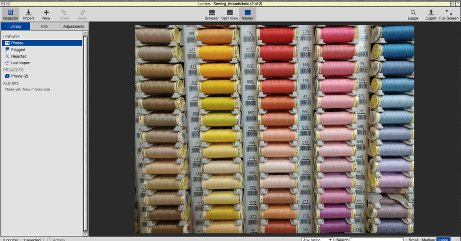
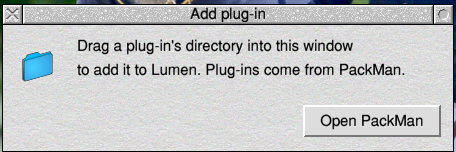
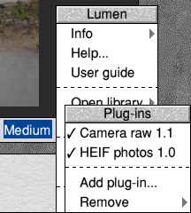
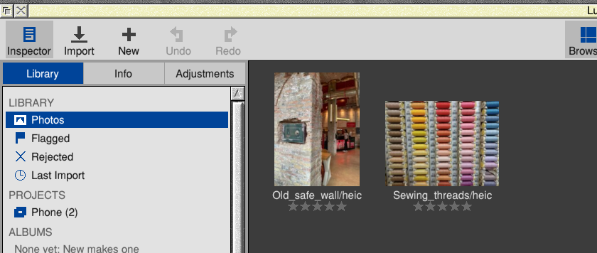
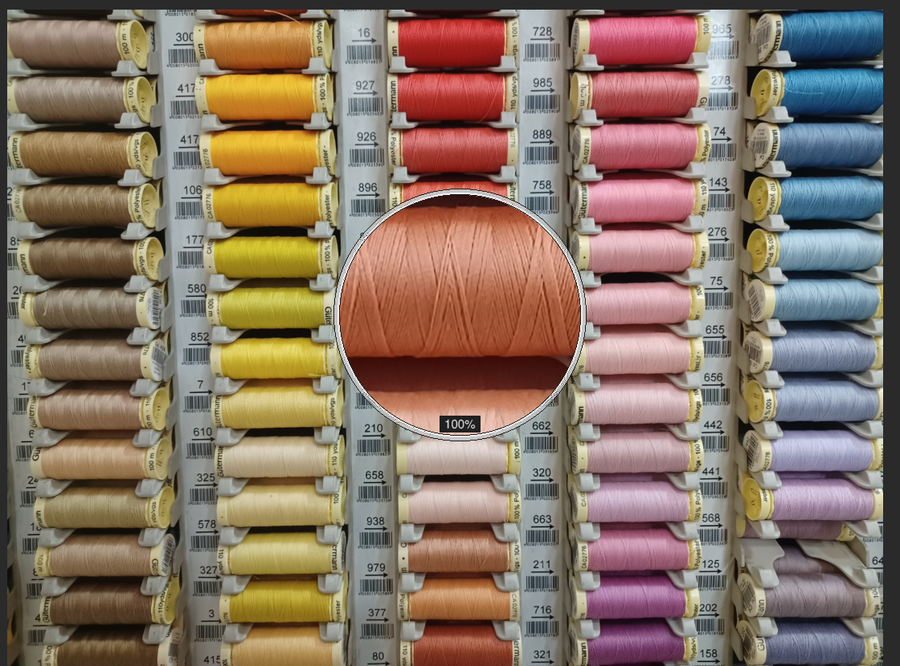
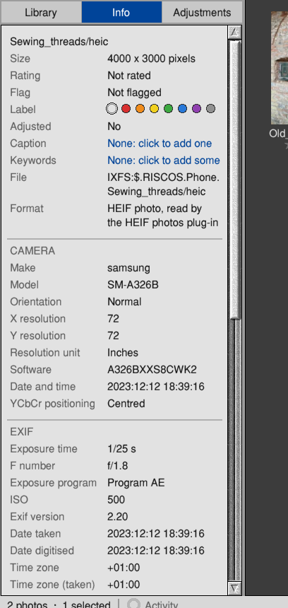
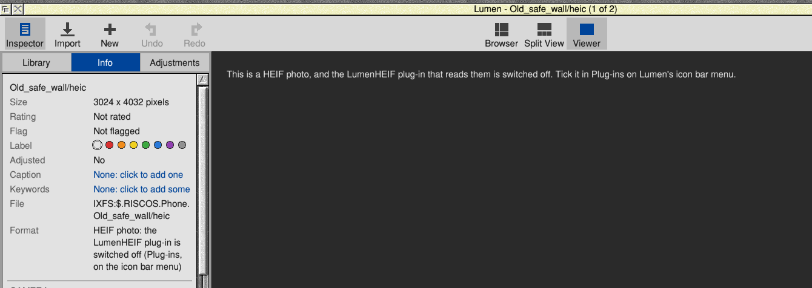

Introduction
Since 2017, iPhones have saved their photos as HEIF (High Efficiency Image File format), in files ending .heic, and many Android phones and some cameras can too. A HEIF photo is compressed the way HEVC (H.265) video is, so it holds the same picture as a JPEG in about half the space, often with more colour (Display P3) and sometimes more than 8 bits a channel.
Lumen doesn't read HEIF itself. It hands HEIF photos to a small separate program, LumenHEIF, built on libheif and on the HEVC decoder from FFmpeg, cut down to just that. LumenHEIF is a format plug-in: its description tells Lumen which files are HEIF photos, and Lumen asks it for their pictures and details.
Once it's installed, HEIF photos sit in Lumen's library beside your JPEGs and raw files, and you rate, adjust, export and print them in the same way.
About this guide
This guide is about the plug-in. Everything else about Lumen is in the Lumen User Guide: choose User guide from the menu on Lumen's icon bar icon.
The pictures are screenshots of Lumen 0.0.37 with LumenHEIF 1.0 on RISC OS 5. The two HEIF photos in them, from an iPhone 12 Pro and a Samsung Galaxy A32 5G, are not the author's: they are sample files from heic.digital/samples (see Credits).
What we assume you know
That you have Lumen and know your way round it a little: how to import photos and open one in the Viewer, the three mouse buttons (Select, Menu and Adjust), and how to drag a directory from a Filer window.
The boxes in this guide
Part I: Getting StartedWhat the plug-in is, and installing it
1 What LumenHEIF does
Lumen asks LumenHEIF for two things.
- A quick picture for the thumbnail. Most HEIF photos carry a small thumbnail of their own, which LumenHEIF decodes in a moment. If a photo has none, LumenHEIF decodes the photo and makes it small.
- The photo itself. When you open a HEIF photo in the Viewer, zoom in, or export or print it, LumenHEIF decodes it at the size Lumen needs, turned the right way up, in sRGB. From then on Lumen treats it like any other photo.
Each time, LumenHEIF also gives Lumen the photo's details from its EXIF: the camera, the exposure and the date, and where the EXIF is in the file, so the Info tab can list all of it.
What LumenHEIF doesn't do
- It never changes or writes to your HEIF files. Like all of Lumen, it only reads them.
- It doesn't save HEIF files. Export makes JPEGs or PNGs, as for any photo.
- It reads HEIF photos coded with HEVC only: not AVIF (HEIF with AV1 inside), and not image sequences (Chapter 8).
2 Installing LumenHEIF
What you need
- Lumen 0.0.37 or later. Earlier versions don't know format plug-ins. LumenHEIF lives inside Lumen, in
!Lumen.Plugins.HEIF. - The same computer Lumen needs: RISC OS 5.30 or later on an ARMv7 machine with VFPv3, such as a Raspberry Pi 4, 400 or CM4, with the SharedUnixLibrary and ARMEABISupport modules from PackMan. LumenHEIF uses NEON where the processor has it, and gives exactly the same pictures without.
- Memory: decoding a 12 megapixel photo takes about 100 MB for a moment.
With PackMan
- Open PackMan and find the LumenHEIF package.
- Install it. PackMan puts it inside Lumen, in
!Lumen.Plugins.HEIF. - If Lumen is running, quit it and start it again. Lumen looks for plug-ins when it starts.
By hand, from the zip file
LumenHEIF also comes as a zip file, LumenHEIF-1.0.zip, laid out as it goes into Lumen: !Lumen.Plugins.HEIF.
- Open the zip file (with SparkFS, or unzip it into a directory).
- Open the
!Lumendirectory inside it (hold Shift and double-click it), thenPlugins. You'll see a directory calledHEIF. - In Lumen, choose Plug-ins → Add plug-in... from the menu on Lumen's icon bar icon.
- Drag the
HEIFdirectory into the Add plug-in window. Lumen copies it into its own Plugins directory and uses it at once, without restarting.

You can also drag the HEIF directory straight onto Lumen's main window.
Checking it's working
Choose Plug-ins from the menu on Lumen's icon bar icon. LumenHEIF is listed as LumenHEIF 1.0, with a tick when it's on.

/HEIC on RISC OS) and drag it into Lumen's window. A thumbnail appears within a second or two. Double-click it to open it in the Viewer.Part II: HEIF Photos in LumenImporting, looking, adjusting and exporting
3 Bringing HEIF photos in
Import HEIF photos as you would any others: drag a directory or the files into Lumen's window, or use Import on the toolbar. Lumen knows them by their endings, heic, heif and hif, in capitals or not, and by the first bytes of the file, so one with another name is found too.

.mov file, which Lumen leaves alone.4 Looking at HEIF photos
Double-click a HEIF photo, as for any other. Lumen asks LumenHEIF for a 1600 pixel picture for the Viewer, then the full size in the background for 100% and the loupe. The full size of a big photo takes a little longer, so the first zoom into a photo may wait a moment.

As for raw photos, Lumen keeps a preview of each HEIF photo in the library (Choices > Previews: Raw files includes HEIF photos), so a photo you've looked at once opens at once next time.
Colour and which way up
- iPhones take their photos in Display P3, which has richer reds and greens than sRGB. LumenHEIF converts them to sRGB, as Lumen does for P3 JPEGs.
- Photos taken with the phone on its side are turned the right way up by LumenHEIF, as the file says. Lumen's own turning ([ and ]) works on top, as for any photo.
- Photos with more than 8 bits a channel (10-bit HEIF) are decoded to 8 bits.
5 Adjusting, exporting and printing
A HEIF photo is just a photo to the rest of Lumen. Everything in the Adjustments tab works on it, and Export and Print work the same. Exports are JPEG or PNG, with the photo's EXIF, caption and keywords.
6 What the Info tab tells you
Select a HEIF photo and click the Info tab. The Format line says how Lumen read it:
| Format says | Meaning |
|---|---|
| HEIF photo, read by the LumenHEIF plug-in | All's well: LumenHEIF is installed and on. |
| HEIF photo: the LumenHEIF plug-in is switched off (Plug-ins, on the icon bar menu) | LumenHEIF is installed but switched off (Chapter 7). |
| Not known: no plug-in reads it now | LumenHEIF has been removed since the photo was imported. Install it again (Chapter 2). |

Below that are the camera's details. LumenHEIF reads them, and tells Lumen where the photo's EXIF is in the file (phones put it in different places), so the Info tab lists it in full.
Part III: Looking After the Plug-inSwitching it off, adding and removing
7 Switching it off, adding and removing
Choose Plug-ins from the menu on Lumen's icon bar icon (or from the main menu over the Browser).
Switching it off and on
Choose LumenHEIF 1.0 to switch it off: the tick goes. LumenHEIF stays installed, but Lumen doesn't use it, and remembers that next time it starts. Choose it again to switch it back on.
While it's off, HEIF photos keep their thumbnails, stars, albums and adjustments, but opening one shows a message instead of the photo:

Removing it
Remove → LumenHEIF deletes LumenHEIF from Lumen, after asking. Your HEIF photos stay in the library, with their stars and adjustments; they just can't be opened until you install it again.
Part IV: Which Photos WorkWhat LumenHEIF reads
8 Which HEIF files work
LumenHEIF reads HEIF still photos whose picture is coded with HEVC, which is what phones and cameras save as .heic, .heif or .hif:
- iPhones (iPhone 7 and later, with iOS 11 or later set to High Efficiency), and iPads.
- Android phones that save HEIF, such as many Samsung Galaxy phones.
- Cameras that save HEIF (HIF), such as some Canon, Sony and Fujifilm models.
That includes photos stored in tiles (as iPhones save them), photos with their own thumbnail, turned and mirrored photos, Display P3 photos, and 8 and 10 bits a channel.
Not read by LumenHEIF 1.0
- AVIF files: HEIF with AV1 inside instead of HEVC.
- HEIF sequences (bursts and animations stored as one file): not read.
- The extra pictures some files carry, such as a depth map or an alpha (transparency) layer: Lumen shows the main photo only.
Part V: The Part of TensQuick answers
9 Ten problems and what to do about them
| Problem | What to do |
|---|---|
| HEIF photos aren't imported | LumenHEIF isn't installed, or Lumen is older than 0.0.37. Install it (Chapter 2), then import the directory again. |
| "...the LumenHEIF plug-in that reads them is switched off" | Tick LumenHEIF in Plug-ins on Lumen's icon bar menu, then open the photo again. |
| "...The LumenHEIF plug-in that reads them needs a newer Lumen" | This LumenHEIF was made for a newer Lumen than yours. Update Lumen. |
| "The LumenHEIF plug-in couldn't read this photo (...)" | The file isn't a HEVC HEIF photo (perhaps AVIF), or it's damaged. Try another copy. |
| "The LumenHEIF plug-in stopped without finishing (perhaps out of memory)" | Decoding needs memory for a moment. Quit other big programs and try again. |
| "Lumen has no plug-in for this photo's format now" | LumenHEIF was removed. Install it again. |
| The colours look a little less vivid than on the phone | Normal: the phone's screen shows Display P3, and Lumen works in sRGB. Vibrance or Saturation bring some back. |
| A photo is on its side | Turn it with [ or ] in the Viewer. |
| The first 100% or loupe on a photo takes a moment | Normal: the full size is being decoded. After that it's instant. |
| Remove says the plug-in was installed by PackMan | Use PackMan to remove it, so PackMan knows it's gone. |
10 Ten things for experienced users
- It's a command-line program.
LumenHEIF thumb SRC IMAGE INFOwrites the photo's own thumbnail (or the photo, 512 pixels at most) as a binary PPM;LumenHEIF decode SRC IMAGE INFO MAXSIDEdecodes the photo to a PPM no bigger than MAXSIDE (0: full size). Run with no arguments, it prints its version and libheif's. - INFO is a text file of
key=valuelines:width,height(as turned),orientation(always 1: the picture comes upright),make,model,iso,exposure,fnumber,focal,taken, andexif=OFFSET LENGTH, where the EXIF's TIFF data is in the file; orerror=.... - Files appear whole or not at all: written under a temporary name and renamed when complete.
- The plug-in description,
!Lumen.Plugins.HEIF.Plugin, follows Lumen's format plug-in API 1:Kind: format,API: 1,Format: HEIF photo,Extensions: heic heif hifandSignaturelines for the HEIF brands (ftypheic,ftypmif1and others at offset 4). The API isdocs/plugin-api.mdin Lumen's source. - Finding the EXIF: LumenHEIF walks the file's top-level boxes to the
metabox, wherever it is (iPhones put it first; Samsung phones after the picture data), finds theExifitem iniinfand its place iniloc. - Colour: a photo whose colour (nclx) or ICC profile says Display P3 is converted to sRGB by a 3×3 matrix in linear light. Other photos are taken to be sRGB.
- NEON: FFmpeg's HEVC NEON code (motion compensation, inverse transforms, loop filters) is used when VFPSupport_Features says the processor has NEON, and switched off otherwise.
*Set Lumen$NEON 0forces the plain code. Both give identical pictures, checked against the PC by the tests. - The FFmpeg in it is FFmpeg 5.1.10 configured with only the HEVC decoder and parser, built for ARMv7 with VFPv3 (no ARMv5 or ARMv6 code), with the RISC OS patches that make its NEON code safe on a CPU that faults unaligned accesses.
- How Lumen runs it: in a task window, one job at a time, sharing the queue with LumenRaw; job files are in
<Wimp$ScrapDir>.LumenRaw. - Source and licences: LumenHEIF is © Andrew Youll, 2026, under the MIT licence; its source is part of Lumen's source (
plugins.heif). libheif is © Dirk Farin and the libheif contributors, under the GNU LGPL 3; FFmpeg is © the FFmpeg developers, under the GNU LGPL 2.1 or later. Their exact sources and the patches are published beside each release asLumenHEIF-1.0-sources.zip, so LumenHEIF can be rebuilt with changed libraries.
Credits and licences
The two HEIF photos in this guide (an old safe in a wall, from an iPhone 12 Pro; sewing threads, from a Samsung Galaxy A32 5G) are not the author's photos. They are sample HEIC files published by heic.digital at https://heic.digital/samples/, and are used here only to show LumenHEIF at work. Their copyright stays with their owners.
LumenHEIF is © Andrew Youll, 2026, and is free software under the MIT licence. It is built on libheif (GNU Lesser General Public License 3) and FFmpeg's libavcodec and libavutil (GNU Lesser General Public License 2.1 or later); the licences are in !Lumen.Plugins.HEIF.Licence. Product names are the trademarks of their owners and are used here only to say which photos work.